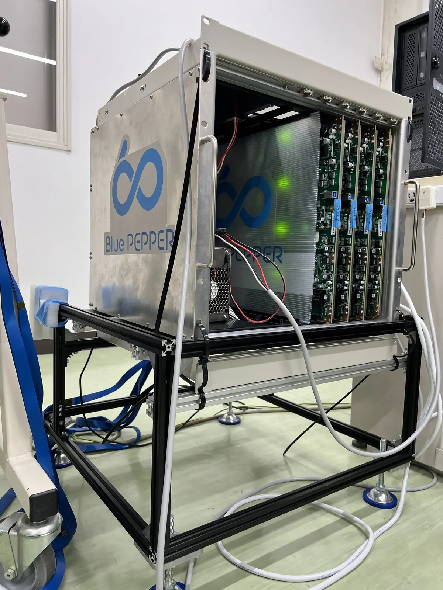
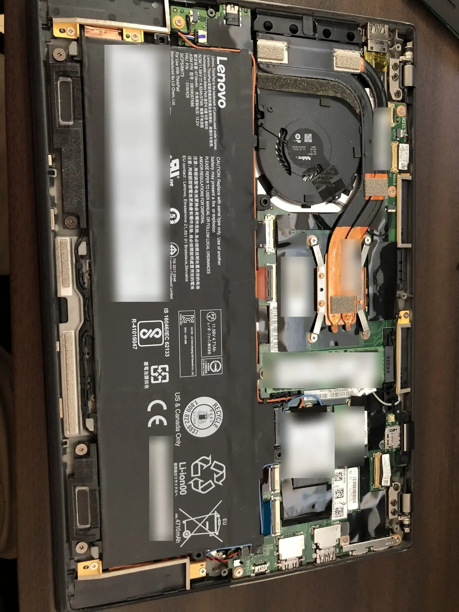
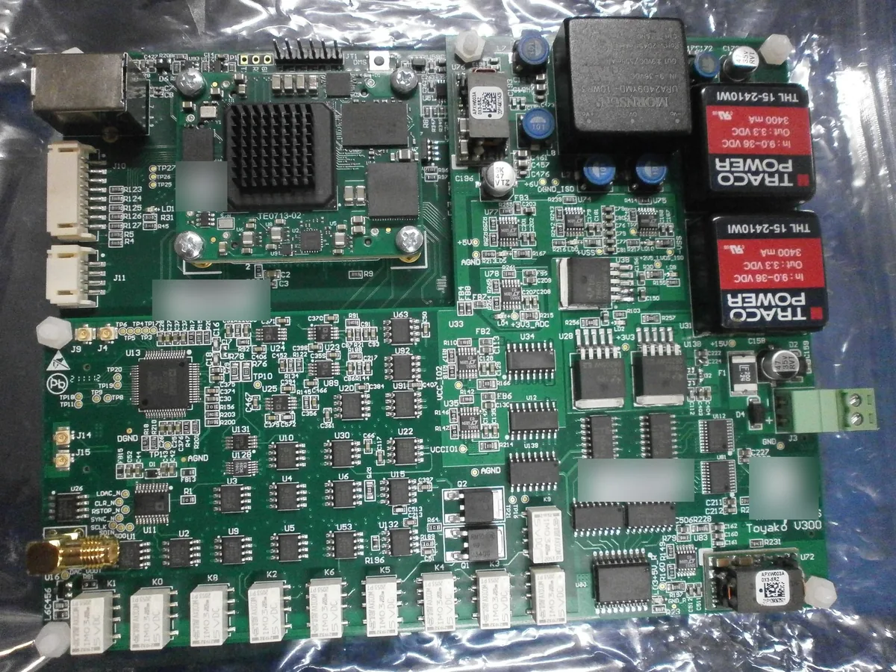
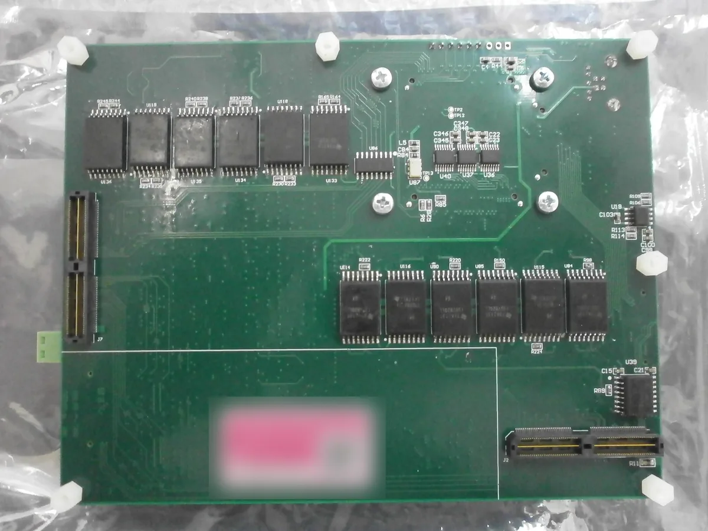

大津町で、
AIとデジタルのmowa
パソコン・スマホの
診断・ご相談は
電源が
お見積もりも
- 年中無休 9:00–17:00
- 熊本県菊池郡大津町
- 096-282-8122



こんなことで、お困りではありませんか
お店でも
-
スマホの
操作が 不安 LINEで
写真を 送りたいのに、 どの ボタンを 押せばいいかわからなくて、 不安に なることがありますよね。 隣で 一緒に 触りながら、 ご案内します。 -
パソコンが
遅い、 急に 止まった 仕事の
ファイルが 入ったまま、 急に 電源が 入らなくなると、 本当に 困りますよね。 まずは 中の データを 残す ところから、 ご一緒します。 -
毎日、
同じ 書き写しが ある 紙の
伝票を、 もう 一度 表計算に 打ち直す 作業は、 面倒で 時間が かかります。 同じ ことの 繰り返しは、 一緒に 軽くしていきましょう。 -
在庫・予約・売上が
手書き 帳面を
開かないと、 棚に 今いくつあるかわからない。 その 不安を、 その 日の うちに 見られる 形に していきます。 -
AIが
気になる 文章の
下書きに 使えると 聞いたけれど、 お客さんの 名前を 入れていいか、 まだ 迷っていませんか。 出して よい 情報から、 一緒に 考えます。 -
現場の
数を、 あとから 見たい 温度や、
機械が 止まった 時刻を あとから 見られず、 困っていませんか。 必要な 数字だけ、 あとから 振り返れるようにします。 -
説明が、
人に よって 違う 新しい
人に、 毎回いちから 口で 教えるのは、 本当に 大変です。 誰が 話しても 同じに なるように、 一緒に 整えましょう。 -
直せる
人が、 もういない 作った
人が いなくなって、 昔の 表計算を 開ける 人が いない。 今の ファイルから 一緒に 見ます。
ひとつでも
サービス
全部を
-
スマホ・パソコン
遅い
料金の原因を 一緒に 見たり、 大切な 控えを 取ったりします。 買い 替えが 必要な ときは、 理由を 先に お伝えします。 目安 -
ツール・
ソフトウェア・ アプリ開発 日報や
料金の在庫の 画面を、 紙や Excelの 代わりに 小さく 作ります。 毎月の 集計が つらくて 面倒、という お悩みも、 一緒に やりましょう。 目安 -
AIを
使ってみる 案内文の
料金の下書きや、 問い合わせの 整理に お使いいただけます。 外に 出して よい 情報は、 先に 一緒に 決めます。 目安 -
現場の
小さな 機械 売っている
料金の機械では 合わない ときに、 温度を 測る 部品や、 小さい 表示、 治具を 作ります。 現場に 合う形を、 一緒に 考えましょう。 目安 -
画面を
見ながら 覚える 少人数で、
料金のその お店の 画面を 見ながら、 一緒に 覚えていきましょう。 わからない ところは、 その 場で 聞いてください。 目安 -
その後の
保守 使い始めてからの
料金の「これ、 どうするんだっけ」も、 月ごとに 遠慮なく 聞いてください。 その後も、 そばで 支えます。 目安
仕事のようす




料金
診断・ご相談は
下の
はじめに
-
診断・ご相談
無料 仮の
料金 オンラインで
30分くらい、 お話を 聞かせてください。 -
訪問して
見る 1,000円 仮の
料金 熊本県内なら、
60分くらい 見にうかが います。 遠い 場所は、 下の オプションを 足します。 -
スマホ・パソコンの
設定 5,000円〜 仮の
料金 LINEや
メールの 設定、 控えの 保存、 つながらない 原因を、 一緒に 見ます。
つくる・覚える
-
ツール・
ソフトウェア・ アプリ開発 30,000円〜 仮の
料金 日報や
在庫の 画面を、 今の 紙や Excelの 代わりに 作ります。 毎日の 面倒を、 一緒に 軽くしましょう。 -
AIを
使ってみる 20,000円〜 仮の
料金 文章の
下書きや、 問い合わせの 整理を、 一緒に 整えます。 出して よい 情報は、 先に 決めます。 -
現場の
機械・ 基板・ 3Dプリンタ 15,000円〜 仮の
料金 小さい
表示や、 温度を 測る 部品、 治具です。 部品代が 別に かかる ときは、 先に お伝えします。 -
画面を
見ながら 覚える 10,000円〜 仮の
料金 90分くらいです。
人数と 場所は、 そのとき 一緒に 決めましょう。
保守プラン（月額）
-
ライト
5,000円 / 月 仮の
料金 メッセージで、
いつでも 質問できます。 平日に、 丁寧に お返しします。 -
スタンダード
12,000円 / 月 仮の
料金 ライトに
加えて、 月1回、 画面を 一緒に 見るか、 現地に うかが います。 -
おまかせ
25,000円 / 月 仮の
料金 こちらから
先に 様子を 見ます。 小さい 直しは、 月2時間まで 一緒に やります。
オプション
事例
自分たちで
自社の製品・道具
-


自社の 装置。 ラック、 扉を 閉めた 姿、 基板の 上面。 自社製品
PEPPER / PEPPER Server
測ったり試したりする
装置です。 動かす サーバも、 基板も、 プログラムも、 ここで 作っています。 必要な ところから、 一緒に 形にします。 -


Toyako。 部品面と、 裏面。 自社の
基板 Toyako
電圧を
数字に して 試す、 小さい 基板です。 8か所を 同時に 測って、 結果を お返しします。 測る タイミングは、 専用の 部品 （FPGA）で そろえています。 -

自社の 確認ソフト。 条件を 変えた 地図。 自社の
道具 MwsDebugTool
動きが
おかしい とき、 配線の 問題か プログラムの 問題かを、 その 場で 分けます。 ピンの 今の 値と、 条件を 変えた 結果の 地図を、 一緒に 見られます。 -
教室の
基板 キーホルダー基板
光る
小さい 基板に、 自分で 書いた プログラムを 入れて 動かします。 教室で、 一緒に 触って 学んでいます。
こういう手伝いもします
-
例
農場の
日報 紙の
日報を、 スマホから 送れるように して、 あとから 表で 見られるようにします。 畑から 戻った あとでも、 安心です。 -
例
商店の
在庫 棚の
数を、 閉じた 帳面ではなく、 その 日の うちに 直せる 表に します。 今いくつあるか、 もう 迷わなくて 大丈夫です。 -
例
問い合わせの
下書き よく
ある 返事の 下書きを 作ります。 送る 前には、 必ず 人が 読みます。 -
例
急に
止まった パソコン 中の
ファイルを 残す ほうを 先に 見て、 直すか 入れ替えるかを、 一緒に 考えます。
現場に合わせたソフトを、ここで作れます
売っている
自社の
MwsDebugTool
部品を

この
仕事の写真
組み立て、
会社のこと
代表あいさつ
代表の
店の
-
基板も、
動かす プログラムも 測る
基板と、 試験の プログラムを 自分で 作ります。 調子が 悪いときも、 回路か プログラムかを、 その 場で 一緒に 見ます。 -
仕事の
画面 日報や
在庫のように、 毎日 開く 画面を 小さく 作れます。 面倒な 繰り返しを、 一緒に 減らしましょう。 -
AI
文章の
下書きや、 問い合わせの 整理です。 使い始めの 設定から、 一緒に やりましょう。 -
基板と、
パソコンまわり 小さい
基板を 設計します。 パソコンや ネット、 控えの 保存も、 一緒に 整えます。 -
3Dプリント
3Dプリンタが
3台あります。 治具や ケースを、 形に してお渡しできます。 -
教室
プログラミングを
少人数で 教えています。 お仕事の 研修とは 別です。
-

代表の たまき -

3Dプリンタ （P2S が 3台） 仮 -
教室の 机 -
レモン電池 -
教室の ロボット -

作業場
ご依頼の流れ
ご契約の
-
まずは
お気軽に ご連絡ください うまく
書けなくても 大丈夫です。 今つらい ことを、 どんな小さなことでも、 そのまま お送りください。 -
お話を
聞かせてください 画面ごしか、
こちらから 伺うか、 ご都合の よい ほうで 大丈夫です。 最初は 今の やり方を 見せてください。 診断・ご相談は 無料です。 -
お見積もりを
お出しします やる
ことと、 やらない こと、 金額を 書いて お渡しします。 見てから 断っていただいても 大丈夫です。 お見積もりは 無料です。 -
一緒に
進めていきます ご納得いただいてから
始めます。 途中で やり方を 変える ときは、 先に お話しします。 -
できあがったら
一緒に 確認します できあがった
ものを、 その 場で 一緒に 触って 確認します。 わからない ことは、 そこで 何でも 聞いてください。 -
その後も
ずっと サポートします 使い続けたい
ときは、 月額で そばに います。 一度きりでも 大丈夫です。 ご都合に 合わせて、 一緒に 考えましょう。
よくある質問
パソコンがほとんどわかりません。
画面を
どこまで来てもらえますか。
熊本県内が
新しい機械を買わされますか。
今の
いくらかかりますか。
診断・ご相談と
AIに、帳簿やお客さんの情報を送るのですか。
送って
直したあとも見てくれますか。
月額で
基板や3Dプリントだけでも頼めますか。
はい、
教室とは何が違いますか。
同じ
お問い合わせ
診断・ご相談は
- 名前
- AIとデジタルのmowa
- 運営
- mowaソリューションズ株式会社
- サービス
- パソコン・スマホの
困りごとから、 アプリ開発まで - 代表
- たまき
- 電話
- 096-282-8122
- 住所
- 〒869-1217
熊本県菊池郡大津町森729-41 - 受付
- メール・SNSは
24時間365日
事務所は年中無休 9:00〜17:00 - エリア
- 熊本県
（画面だけでも できます）
メールは